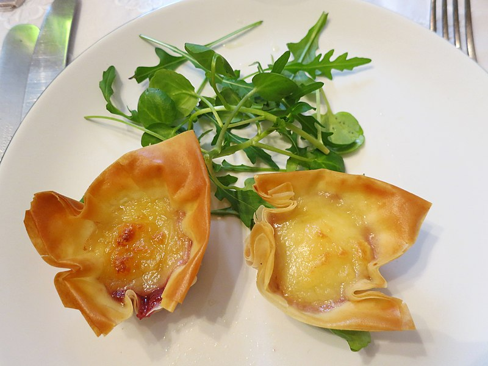

feta parcels

Description
This delightful recipe combines moist tangy feta cheese with fresh spinach wrapped within a light and crispy blanket of filo pastry. Equally delicious served warm or at room temperature
Feel free to use fresh or frozen spinach. Either way be sure to squeeze any excess moisture from the spinach thoroughly before adding to the cheese mixture.
Ingredients
- Spinach 200g
- Feta 150g
- Egg x1
- Nutmeg
- Garlic 2 cloves
- Butter (softened) 50g
- Filo pastry 8 sheets
Method
- Boil spinach in hot pan until wilted then drain allow to cool.
- Mix feta with beaten egg and generous grating of nutmeg plus some dill thats not in the ungredients list + season.
- For each parcel layout a sheet of filo and butter genrously before folding in half.
- Put a line of filling across the middle with an inch gap each end then roll up.
- Brush tops of parcels before baking on oven at 180 degress c for 15 minutes.